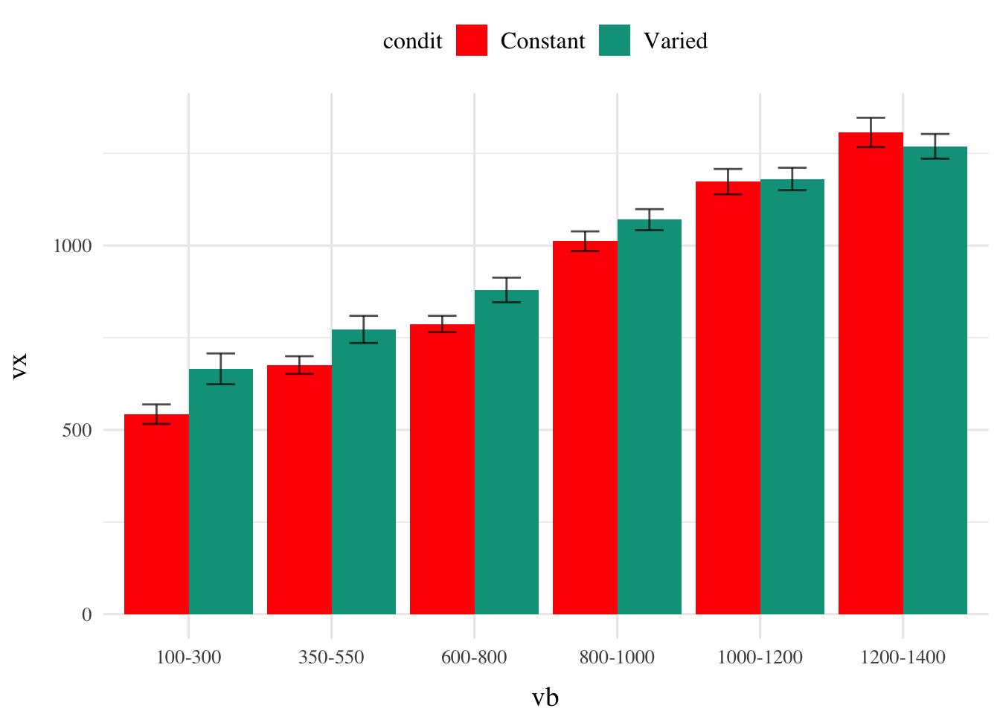
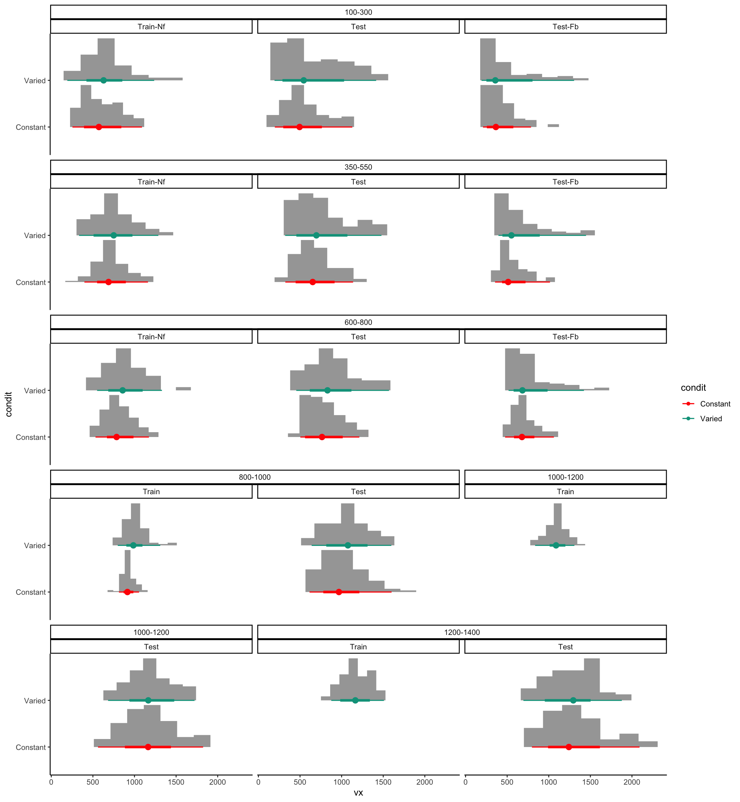

Code
Warning: Removed 13033 rows containing non-finite values (`stat_summary()`).
Removed 13033 rows containing non-finite values (`stat_summary()`).
Code
#vp1 / gridExtra::tableGrob(vt1)
#vp1 / gt_temp(vt1)```{r}
#| label: test vx table
#| tbl-cap: "Testing - No Feedback"
#| tbl-subcap: ["Constant Testing - X Velocity", "Varied Testing - X Velocity"]
#| layout-ncol: 2
result <- create_summary_table(test, "vx", mfun = list(mean = mean, median = median, sd = sd))
result$constant #|> kable_styling(full_width = F)
result$varied #|> kable_styling(full_width = F)
```Testing - No Feedback
| Band | Band Type | Mean | Median | Sd |
|---|---|---|---|---|
| 100-300 | Extrapolation | 544 | 461 | 335 |
| 350-550 | Extrapolation | 674 | 638 | 309 |
| 600-800 | Extrapolation | 786 | 742 | 305 |
| 800-1000 | Trained | 1010 | 952 | 358 |
| 1000-1200 | Extrapolation | 1167 | 1104 | 430 |
| 1200-1400 | Extrapolation | 1283 | 1225 | 483 |
| Band | Band Type | Mean | Median | Sd |
|---|---|---|---|---|
| 100-300 | Extrapolation | 664 | 533 | 448 |
| 350-550 | Extrapolation | 768 | 677 | 402 |
| 600-800 | Extrapolation | 876 | 813 | 390 |
| 800-1000 | Trained | 1064 | 1029 | 370 |
| 1000-1200 | Trained | 1180 | 1179 | 372 |
| 1200-1400 | Trained | 1265 | 1249 | 412 |
| Band | Group | Block_1 | Block_2 | Block_3 | Block_4 | Block_5 |
|---|---|---|---|---|---|---|
| 800-1000 | Constant | 919 (10) | 940 (7) | 910 (7) | 910 (7) | 933 (7) |
| 800-1000 | Varied | 970 (20) | 975 (17) | 1017 (18) | 1020 (17) | 1029 (16) |
| 1000-1200 | Varied | 1068 (22) | 1100 (19) | 1080 (19) | 1110 (17) | 1080 (15) |
| 1200-1400 | Varied | 1109 (24) | 1183 (19) | 1160 (23) | 1198 (20) | 1200 (18) |
# vt1 %>% gt() %>% tab_options(column_labels.background.color = "#176940",
# table.font.size = px(14))Warning: Removed 13033 rows containing non-finite values (`stat_summary()`).
Removed 13033 rows containing non-finite values (`stat_summary()`).
#vp1 / gridExtra::tableGrob(vt1)
#vp1 / gt_temp(vt1)# vt2=e1 |> filter(expMode=="train") |>
# learn_curve_table(gt.train,dist,gw=condit,groupVec=c(id,condit,vb),nbins=nb) %>%
# rename("Block"=Trial_Bin)
vt2=e1 |> filter(expMode=="train") |>
learn_curve_table(gt.train,dist,gw=Trial_Bin,groupVec=c(id,condit,vb),nbins=nb,prefix="Block_") %>%
rename("Band"=vb,"Group"=condit) Warning: Removed 13033 rows containing non-finite values (`stat_summary()`).
Removed 13033 rows containing non-finite values (`stat_summary()`).| Band | Group | Block_1 | Block_2 | Block_3 | Block_4 | Block_5 |
|---|---|---|---|---|---|---|
| 800-1000 | Constant | 23 (8) | 34 (6) | 11 (5) | 13 (5) | 30 (5) |
| 800-1000 | Varied | 64 (17) | 61 (13) | 96 (15) | 102 (14) | 104 (13) |
| 1000-1200 | Varied | -14 (19) | 10 (15) | -11 (15) | 18 (13) | -11 (12) |
| 1200-1400 | Varied | -155 (21) | -85 (16) | -108 (19) | -78 (16) | -76 (14) |
Warning: Removed 13033 rows containing non-finite values (`stat_summary()`).
Removed 13033 rows containing non-finite values (`stat_summary()`).
vp4 <- e1 |> filter(expMode=="train") |> group_by(id) |>
mutate(Trial_Bin = cut(gt.train,breaks = nb,include.lowest=TRUE,labels=FALSE)) |>
group_by(id,Trial_Bin,condit, vb) |> summarise(nHits=sum(dist==0),n=n(),Percent_Hit=nHits/n) %>%
learn_curve_plot2(Trial_Bin,Percent_Hit,color_var=condit,facet_var=vb,groupVec=c(id,vb,condit))```{r}
#| layout: [[65, 65],[-5], [1,550, 550]]
#| label: train tables2
#| tbl-subcap:
#| - "Vx"
#| - "Deviation from target"
vt1 %>% kable(format = "html",escape = FALSE)
vt2 %>% kable(format = "html",escape = FALSE)
vp3+big_text()
```Warning: Removed 13033 rows containing non-finite values (`stat_summary()`).
Removed 13033 rows containing non-finite values (`stat_summary()`).```{r}
#| layout: [[65, 65],[-5], [1,550, 550]]
#| label: train tables2
#| tbl-subcap:
#| - "Vx"
#| - "Deviation from target"
vp4+big_text()
```| Band | Group | Block_1 | Block_2 | Block_3 | Block_4 | Block_5 |
|---|---|---|---|---|---|---|
| 800-1000 | Constant | 919 (10) | 940 (7) | 910 (7) | 910 (7) | 933 (7) |
| 800-1000 | Varied | 970 (20) | 975 (17) | 1017 (18) | 1020 (17) | 1029 (16) |
| 1000-1200 | Varied | 1068 (22) | 1100 (19) | 1080 (19) | 1110 (17) | 1080 (15) |
| 1200-1400 | Varied | 1109 (24) | 1183 (19) | 1160 (23) | 1198 (20) | 1200 (18) |
| Group | Band | Block_1 | Block_2 | Block_3 | Block_4 | Block_5 |
|---|---|---|---|---|---|---|
| Constant | 800-1000 | 200 (7) | 130 (5) | 123 (4) | 116 (4) | 109 (4) |
| Varied | 800-1000 | 244 (12) | 181 (10) | 203 (12) | 190 (12) | 185 (11) |
| Varied | 1000-1200 | 264 (14) | 198 (12) | 211 (11) | 177 (10) | 167 (9) |
| Varied | 1200-1400 | 360 (15) | 234 (11) | 275 (14) | 225 (12) | 220 (10) |


```{r}
#| layout: [[65, 65],[-5], [1,350, 350,10]]
#| label: train tables
#| tbl-subcap:
#| - "Vx"
#| - "Deviation from target"
#| column: screen-inset-right
vt1 %>% kable(format = "html",escape = FALSE)
vt2 %>% kable(format = "html",escape = FALSE)
vp3
```Warning: Removed 13033 rows containing non-finite values (`stat_summary()`).
Removed 13033 rows containing non-finite values (`stat_summary()`).```{r}
#| layout: [[65, 65],[-5], [1,350, 350,10]]
#| label: train tables
#| tbl-subcap:
#| - "Vx"
#| - "Deviation from target"
#| column: screen-inset-right
vp4
```| Band | Group | Block_1 | Block_2 | Block_3 | Block_4 | Block_5 |
|---|---|---|---|---|---|---|
| 800-1000 | Constant | 919 (10) | 940 (7) | 910 (7) | 910 (7) | 933 (7) |
| 800-1000 | Varied | 970 (20) | 975 (17) | 1017 (18) | 1020 (17) | 1029 (16) |
| 1000-1200 | Varied | 1068 (22) | 1100 (19) | 1080 (19) | 1110 (17) | 1080 (15) |
| 1200-1400 | Varied | 1109 (24) | 1183 (19) | 1160 (23) | 1198 (20) | 1200 (18) |
| Group | Band | Block_1 | Block_2 | Block_3 | Block_4 | Block_5 |
|---|---|---|---|---|---|---|
| Constant | 800-1000 | 200 (7) | 130 (5) | 123 (4) | 116 (4) | 109 (4) |
| Varied | 800-1000 | 244 (12) | 181 (10) | 203 (12) | 190 (12) | 185 (11) |
| Varied | 1000-1200 | 264 (14) | 198 (12) | 211 (11) | 177 (10) | 167 (9) |
| Varied | 1200-1400 | 360 (15) | 234 (11) | 275 (14) | 225 (12) | 220 (10) |


```{r}
#| label: tbl-example4
#| tbl-cap: "Example"
#| tbl-subcap:
#| - "Signed Distance"
#| - "Percent Hit"
#| layout: [[80, 90],[2], [-60,650]]
#| column: screen-inset-right
#| fig-width: 14
#|
vt2 %>% kable(format = "html",escape = FALSE) %>% kable_styling(font_size = 7)
vt3 %>% kable(format = "html",escape = FALSE)
vp4+vp3 + plot_layout(guides = "collect") & theme(legend.position = 'right')
```Warning: Removed 13033 rows containing non-finite values (`stat_summary()`).
Removed 13033 rows containing non-finite values (`stat_summary()`).Table 1: Example
| Group | Band | Block_1 | Block_2 | Block_3 | Block_4 | Block_5 |
|---|---|---|---|---|---|---|
| Constant | 800-1000 | 200 (7) | 130 (5) | 123 (4) | 116 (4) | 109 (4) |
| Varied | 800-1000 | 244 (12) | 181 (10) | 203 (12) | 190 (12) | 185 (11) |
| Varied | 1000-1200 | 264 (14) | 198 (12) | 211 (11) | 177 (10) | 167 (9) |
| Varied | 1200-1400 | 360 (15) | 234 (11) | 275 (14) | 225 (12) | 220 (10) |
| Band | Group | Block_1 | Block_2 | Block_3 | Block_4 | Block_5 |
|---|---|---|---|---|---|---|
| 800-1000 | Constant | 23 (8) | 34 (6) | 11 (5) | 13 (5) | 30 (5) |
| 800-1000 | Varied | 64 (17) | 61 (13) | 96 (15) | 102 (14) | 104 (13) |
| 1000-1200 | Varied | -14 (19) | 10 (15) | -11 (15) | 18 (13) | -11 (12) |
| 1200-1400 | Varied | -155 (21) | -85 (16) | -108 (19) | -78 (16) | -76 (14) |

((vp1+big_text()+vp2+big_text())/(vp3+big_text()+vp4+big_text())) + plot_layout(guides = "collect") Warning: Removed 13033 rows containing non-finite values (`stat_summary()`).
Removed 13033 rows containing non-finite values (`stat_summary()`).
Removed 13033 rows containing non-finite values (`stat_summary()`).
Removed 13033 rows containing non-finite values (`stat_summary()`).
Removed 13033 rows containing non-finite values (`stat_summary()`).
Removed 13033 rows containing non-finite values (`stat_summary()`).

# create a kable table to mirror plot of distance effects for vb and condit
e1 |> filter(expMode %in% c("test-Nf","test-train-nf")) |> group_by(vb,condit) %>%
summarise(distMean=mean(dist),distSd=sd(dist)) %>%
mutate(meanLab=paste0("Mean=",round(distMean,0)),sdLab=paste0("Sd=",round(distSd,0))) %>%
mutate(sumStatLab=paste0(meanLab,"\n",sdLab)) %>%
select(vb,condit,sumStatLab) %>%
spread(condit,sumStatLab) %>%
kable(format = "html",escape = FALSE) %>%
kable_styling(font_size = 10)| vb | Constant | Varied |
|---|---|---|
| 100-300 | Mean=271 Sd=308 | Mean=386 Sd=426 |
| 350-550 | Mean=201 Sd=238 | Mean=285 Sd=340 |
| 600-800 | Mean=155 Sd=194 | Mean=234 Sd=270 |
| 800-1000 | Mean=192 Sd=238 | Mean=221 Sd=248 |
| 1000-1200 | Mean=233 Sd=282 | Mean=208 Sd=226 |
| 1200-1400 | Mean=287 Sd=290 | Mean=242 Sd=235 |

testAvg |> ggplot(aes(x = vb, y = vx,fill=condit)) +
stat_summary(geom = "bar", position=position_dodge(), fun = mean) +
stat_summary(geom = "errorbar", position=position_dodge(.9), fun.data = mean_se, width = .4, alpha = .7) 
e1 |> filter(expMode %in% c("test-Nf","test-train-nf")) |> group_by(vb,condit) %>%
summarise(vxMean=mean(vx),vxSd=sd(vx)) %>%
mutate(meanLab=paste0("Mean=",round(vxMean,0)),sdLab=paste0("Sd=",round(vxSd,0))) %>%
mutate(sumStatLab=paste0(meanLab,"\n",sdLab)) %>%
select(vb,condit,sumStatLab) %>%
spread(condit,sumStatLab) %>%
kable(format = "html",escape = FALSE) %>%
kable_styling(font_size = 10)| vb | Constant | Varied |
|---|---|---|
| 100-300 | Mean=544 Sd=335 | Mean=664 Sd=448 |
| 350-550 | Mean=674 Sd=309 | Mean=768 Sd=402 |
| 600-800 | Mean=786 Sd=305 | Mean=876 Sd=390 |
| 800-1000 | Mean=1010 Sd=358 | Mean=1064 Sd=370 |
| 1000-1200 | Mean=1167 Sd=430 | Mean=1180 Sd=372 |
| 1200-1400 | Mean=1283 Sd=483 | Mean=1265 Sd=412 |

testAvg |> ggplot(aes(x = vb, y = sdist,fill=condit)) +
stat_summary(geom = "bar", position=position_dodge(), fun = mean) +
stat_summary(geom = "errorbar", position=position_dodge(.9), fun.data = mean_se, width = .4, alpha = .7) 
e1 |> filter(expMode %in% c("test-Nf","test-train-nf")) |> group_by(vb,condit) %>%
summarise(sdistMean=mean(sdist),sdistSd=sd(sdist)) %>%
mutate(meanLab=paste0("Mean=",round(sdistMean,0)),sdLab=paste0("Sd=",round(sdistSd,0))) %>%
mutate(sumStatLab=paste0(meanLab,"\n",sdLab)) %>%
select(vb,condit,sumStatLab) %>%
spread(condit,sumStatLab) %>%
kable(format = "html",escape = FALSE) %>%
kable_styling(font_size = 10)| vb | Constant | Varied |
|---|---|---|
| 100-300 | Mean=269 Sd=309 | Mean=385 Sd=427 |
| 350-550 | Mean=175 Sd=257 | Mean=265 Sd=356 |
| 600-800 | Mean=74 Sd=237 | Mean=152 Sd=323 |
| 800-1000 | Mean=95 Sd=291 | Mean=136 Sd=303 |
| 1000-1200 | Mean=64 Sd=360 | Mean=66 Sd=300 |
| 1200-1400 | Mean=-3 Sd=408 | Mean=-25 Sd=336 |
testAvg |> ggplot(aes(x = vb, y = Percent_Hit,fill=condit)) +
stat_summary(geom = "bar", position=position_dodge(), fun = mean) +
stat_summary(geom = "errorbar", position=position_dodge(.9), fun.data = mean_se, width = .4, alpha = .7) 
testAvg |> group_by(vb,condit) %>%
summarise(Percent_HitMean=mean(Percent_Hit),Percent_HitSd=sd(Percent_Hit)) %>%
mutate(meanLab=paste0("Mean=",round(Percent_HitMean,3)),sdLab=paste0("Sd=",round(Percent_HitSd,2))) %>%
mutate(sumStatLab=paste0(meanLab,"\n",sdLab)) %>%
select(vb,condit,sumStatLab) %>%
spread(condit,sumStatLab) %>%
kable(format = "html",escape = FALSE) %>%
kable_styling(font_size = 10)| vb | Constant | Varied |
|---|---|---|
| 100-300 | Mean=0.236 Sd=0.26 | Mean=0.201 Sd=0.26 |
| 350-550 | Mean=0.24 Sd=0.18 | Mean=0.245 Sd=0.21 |
| 600-800 | Mean=0.282 Sd=0.16 | Mean=0.206 Sd=0.16 |
| 800-1000 | Mean=0.272 Sd=0.22 | Mean=0.19 Sd=0.19 |
| 1000-1200 | Mean=0.21 Sd=0.2 | Mean=0.206 Sd=0.2 |
| 1200-1400 | Mean=0.161 Sd=0.17 | Mean=0.2 Sd=0.19 |
create_table(test, "vx")| Band | Band Type | Constant | Band Type | Varied |
|---|---|---|---|---|
| 100-300 | Extrapolation | Mean=542 SD=252 | Extrapolation | Mean=665 SD=365 |
| 350-550 | Extrapolation | Mean=676 SD=227 | Extrapolation | Mean=772 SD=321 |
| 600-800 | Extrapolation | Mean=787 SD=210 | Extrapolation | Mean=880 SD=292 |
| 800-1000 | Trained | Mean=1012 SD=254 | Trained | Mean=1070 SD=249 |
| 1000-1200 | Extrapolation | Mean=1173 SD=308 | Trained | Mean=1181 SD=266 |
| 1200-1400 | Extrapolation | Mean=1307 SD=356 | Trained | Mean=1269 SD=292 |
create_table(test, "Percent_Hit")| Band | Band Type | Constant | Band Type | Varied |
|---|---|---|---|---|
| 100-300 | Extrapolation | Mean=0.236 SD=0.26 | Extrapolation | Mean=0.201 SD=0.26 |
| 350-550 | Extrapolation | Mean=0.24 SD=0.18 | Extrapolation | Mean=0.245 SD=0.21 |
| 600-800 | Extrapolation | Mean=0.282 SD=0.16 | Extrapolation | Mean=0.206 SD=0.16 |
| 800-1000 | Trained | Mean=0.272 SD=0.22 | Trained | Mean=0.19 SD=0.19 |
| 1000-1200 | Extrapolation | Mean=0.21 SD=0.2 | Trained | Mean=0.206 SD=0.2 |
| 1200-1400 | Extrapolation | Mean=0.161 SD=0.17 | Trained | Mean=0.2 SD=0.19 |
e1 %>%
filter(expMode %in% c("test-Nf","test-train-nf")) %>%
group_by(vb, condit, bandType) %>%
summarise(distMean = mean(dist), distSd = sd(dist)) %>%
mutate(
meanLab = paste0("Mean=", round(distMean, 0)),
sdLab = paste0("Sd=", round(distSd, 0))
) %>%
mutate(sumStatLab = paste0(meanLab, "\n", sdLab)) %>%
pivot_wider(
id_cols = c(vb, bandType),
names_from = condit,
values_from = sumStatLab
) %>%
arrange(vb, bandType) %>%
kable(format = "html", escape = FALSE)| vb | bandType | Constant | Varied |
|---|---|---|---|
| 100-300 | Extrapolation | Mean=271 Sd=308 | Mean=386 Sd=426 |
| 350-550 | Extrapolation | Mean=201 Sd=238 | Mean=285 Sd=340 |
| 600-800 | Extrapolation | Mean=155 Sd=194 | Mean=234 Sd=270 |
| 800-1000 | Trained | Mean=192 Sd=238 | Mean=221 Sd=248 |
| 1000-1200 | Trained | NA | Mean=208 Sd=226 |
| 1000-1200 | Extrapolation | Mean=233 Sd=282 | NA |
| 1200-1400 | Trained | NA | Mean=242 Sd=235 |
| 1200-1400 | Extrapolation | Mean=287 Sd=290 | NA |
e1 |> filter(expMode %in% c("test-Nf","test-train-nf")) |> group_by(vb,condit) %>%
summarise(vxMean=mean(vx),vxSd=sd(vx)) %>%
mutate(meanLab=paste0("Mean=",round(vxMean,0)),sdLab=paste0("Sd=",round(vxSd,0))) %>%
mutate(sumStatLab=paste0(meanLab,"\n",sdLab)) %>%
select(vb,condit,sumStatLab) %>%
spread(condit,sumStatLab) %>%
kable(format = "html",escape = FALSE,caption = "Vx Mean") %>%
kable_styling(font_size = 10)| vb | Constant | Varied |
|---|---|---|
| 100-300 | Mean=544 Sd=335 | Mean=664 Sd=448 |
| 350-550 | Mean=674 Sd=309 | Mean=768 Sd=402 |
| 600-800 | Mean=786 Sd=305 | Mean=876 Sd=390 |
| 800-1000 | Mean=1010 Sd=358 | Mean=1064 Sd=370 |
| 1000-1200 | Mean=1167 Sd=430 | Mean=1180 Sd=372 |
| 1200-1400 | Mean=1283 Sd=483 | Mean=1265 Sd=412 |
e1 |> filter(expMode %in% c("test-Nf","test-train-nf")) |> group_by(vb,condit) %>%
summarise(sdistMean=mean(sdist),sdistSd=sd(sdist)) %>%
mutate(meanLab=paste0("Mean=",round(sdistMean,0)),sdLab=paste0("Sd=",round(sdistSd,0))) %>%
mutate(sumStatLab=paste0(meanLab,"\n",sdLab)) %>%
select(vb,condit,sumStatLab) %>%
spread(condit,sumStatLab) %>%
kable(format = "html",escape = FALSE,caption = "Signed Deviation Mean") %>%
kable_styling(font_size = 10)| vb | Constant | Varied |
|---|---|---|
| 100-300 | Mean=269 Sd=309 | Mean=385 Sd=427 |
| 350-550 | Mean=175 Sd=257 | Mean=265 Sd=356 |
| 600-800 | Mean=74 Sd=237 | Mean=152 Sd=323 |
| 800-1000 | Mean=95 Sd=291 | Mean=136 Sd=303 |
| 1000-1200 | Mean=64 Sd=360 | Mean=66 Sd=300 |
| 1200-1400 | Mean=-3 Sd=408 | Mean=-25 Sd=336 |
testAvg |> group_by(vb,condit) %>%
summarise(Percent_HitMean=mean(Percent_Hit),Percent_HitSd=sd(Percent_Hit)) %>%
mutate(meanLab=paste0("Mean=",round(Percent_HitMean,3)),sdLab=paste0("Sd=",round(Percent_HitSd,2))) %>%
mutate(sumStatLab=paste0(meanLab,"\n",sdLab)) %>%
select(vb,condit,sumStatLab) %>%
spread(condit,sumStatLab) %>%
kable(format = "html",escape = FALSE,caption = "Mean % Hit") %>%
kable_styling(font_size = 10)| vb | Constant | Varied |
|---|---|---|
| 100-300 | Mean=0.236 Sd=0.26 | Mean=0.201 Sd=0.26 |
| 350-550 | Mean=0.24 Sd=0.18 | Mean=0.245 Sd=0.21 |
| 600-800 | Mean=0.282 Sd=0.16 | Mean=0.206 Sd=0.16 |
| 800-1000 | Mean=0.272 Sd=0.22 | Mean=0.19 Sd=0.19 |
| 1000-1200 | Mean=0.21 Sd=0.2 | Mean=0.206 Sd=0.2 |
| 1200-1400 | Mean=0.161 Sd=0.17 | Mean=0.2 Sd=0.19 |
e1 %>% group_by(id, vb, condit) %>%
summarise(dist = mean(dist), .groups = 'drop') %>%
group_by(vb, condit) %>%
summarise(distMean = mean(dist), distSd = sd(dist), .groups = 'drop') %>%
mutate(
meanLab = paste0("Mean=", round(distMean, 0)),
sdLab = paste0("Sd=", round(distSd, 0))
) %>%
mutate(sumStatLab = paste0(meanLab, "\n", sdLab)) %>%
select(vb, condit, sumStatLab) %>%
spread(condit, sumStatLab) %>%
kable(format = "html", escape = FALSE, caption = "Deviation Mean - Aggregate by Id") %>%
kable_styling(font_size = 11)| vb | Constant | Varied |
|---|---|---|
| 100-300 | Mean=254 Sd=181 | Mean=340 Sd=264 |
| 350-550 | Mean=187 Sd=125 | Mean=261 Sd=202 |
| 600-800 | Mean=147 Sd=77 | Mean=218 Sd=145 |
| 800-1000 | Mean=140 Sd=58 | Mean=206 Sd=86 |
| 1000-1200 | Mean=241 Sd=173 | Mean=206 Sd=74 |
| 1200-1400 | Mean=295 Sd=186 | Mean=261 Sd=70 |
e1 %>%
filter(expMode %in% c("test-Nf", "test-train-nf")) %>%
group_by(id, vb, condit) %>%
summarise(vx = mean(vx), .groups = 'drop') %>%
group_by(vb, condit) %>%
summarise(vxMean = mean(vx), vxSd = sd(vx), .groups = 'drop') %>%
mutate(
meanLab = paste0("Mean=", round(vxMean, 0)),
sdLab = paste0("Sd=", round(vxSd, 0))
) %>%
mutate(sumStatLab = paste0(meanLab, "\n", sdLab)) %>%
select(vb, condit, sumStatLab) %>%
spread(condit, sumStatLab) %>%
kable(format = "html", escape = FALSE, caption = "Vx Mean - Aggregate by Id") %>%
kable_styling(font_size = 11)| vb | Constant | Varied |
|---|---|---|
| 100-300 | Mean=542 Sd=252 | Mean=665 Sd=365 |
| 350-550 | Mean=676 Sd=227 | Mean=772 Sd=321 |
| 600-800 | Mean=787 Sd=210 | Mean=880 Sd=292 |
| 800-1000 | Mean=1012 Sd=254 | Mean=1070 Sd=249 |
| 1000-1200 | Mean=1173 Sd=308 | Mean=1181 Sd=266 |
| 1200-1400 | Mean=1307 Sd=356 | Mean=1269 Sd=292 |
e1 %>%
filter(expMode %in% c("test-Nf", "test-train-nf")) %>%
group_by(id, vb, condit) %>%
summarise(sdist = mean(sdist), .groups = 'drop') %>%
group_by(vb, condit) %>%
summarise(sdistMean = mean(sdist), sdistSd = sd(sdist), .groups = 'drop') %>%
mutate(
meanLab = paste0("Mean=", round(sdistMean, 0)),
sdLab = paste0("Sd=", round(sdistSd, 0))
) %>%
mutate(sumStatLab = paste0(meanLab, "\n", sdLab)) %>%
select(vb, condit, sumStatLab) %>%
spread(condit, sumStatLab) %>%
kable(format = "html", escape = FALSE, caption = "Signed Distance Mean - Aggregate by Id") %>%
kable_styling(font_size = 11)| vb | Constant | Varied |
|---|---|---|
| 100-300 | Mean=268 Sd=229 | Mean=386 Sd=344 |
| 350-550 | Mean=177 Sd=186 | Mean=270 Sd=286 |
| 600-800 | Mean=75 Sd=157 | Mean=155 Sd=241 |
| 800-1000 | Mean=98 Sd=204 | Mean=141 Sd=196 |
| 1000-1200 | Mean=70 Sd=253 | Mean=66 Sd=209 |
| 1200-1400 | Mean=17 Sd=297 | Mean=-20 Sd=232 |
testAvg %>%
group_by(id, vb, condit) %>%
summarise(Percent_Hit = mean(Percent_Hit), .groups = 'drop') %>%
group_by(vb, condit) %>%
summarise(
Percent_HitMean = mean(Percent_Hit),
Percent_HitSd = sd(Percent_Hit),
.groups = 'drop'
) %>%
mutate(
meanLab = paste0("Mean=", round(Percent_HitMean, 3)),
sdLab = paste0("Sd=", round(Percent_HitSd, 2))
) %>%
mutate(sumStatLab = paste0(meanLab, "\n", sdLab)) %>%
select(vb, condit, sumStatLab) %>%
spread(condit, sumStatLab) %>%
kable(format = "html", escape = FALSE, caption = "Mean % Hit - Aggregate by Id") %>%
kable_styling(font_size = 10)| vb | Constant | Varied |
|---|---|---|
| 100-300 | Mean=0.236 Sd=0.26 | Mean=0.201 Sd=0.26 |
| 350-550 | Mean=0.24 Sd=0.18 | Mean=0.245 Sd=0.21 |
| 600-800 | Mean=0.282 Sd=0.16 | Mean=0.206 Sd=0.16 |
| 800-1000 | Mean=0.272 Sd=0.22 | Mean=0.19 Sd=0.19 |
| 1000-1200 | Mean=0.21 Sd=0.2 | Mean=0.206 Sd=0.2 |
| 1200-1400 | Mean=0.161 Sd=0.17 | Mean=0.2 Sd=0.19 |
# Create the Constant table
constant_table <- e1 %>%
filter(expMode %in% c("test-Nf", "test-train-nf")) %>%
group_by(vb, bandType, condit) %>%
summarise(distMean = mean(dist), distSd = sd(dist)) %>%
filter(condit == "Constant") %>%
mutate(
meanLab = paste0("Mean=", round(distMean, 0)),
sdLab = paste0("Sd=", round(distSd, 0)),
sumStatLab = paste0(meanLab, "\n", sdLab)
) %>%
select(vb, bandType, sumStatLab) %>%
rename(Constant = sumStatLab)
# Create the Varied table
varied_table <- e1 %>%
filter(expMode %in% c("test-Nf", "test-train-nf")) %>%
group_by(vb, bandType, condit) %>%
summarise(distMean = mean(dist), distSd = sd(dist)) %>%
filter(condit == "Varied") %>%
mutate(
meanLab = paste0("Mean=", round(distMean, 0)),
sdLab = paste0("Sd=", round(distSd, 0)),
sumStatLab = paste0(meanLab, "\n", sdLab)
) %>%
select(vb, bandType, sumStatLab) %>%
rename(Varied = sumStatLab)
# Merge tables
final_table <- full_join(constant_table, varied_table, by = "vb")
# Create the table
final_table %>%
kbl(digits = c(0, 0, 0, 0, 0),
caption = "Data summary") %>%
kable_minimal(full_width = FALSE,
position = "left") %>%
add_header_above(c("vb" = 1, "Constant" = 2, "Varied" = 2))
vb
|
Constant
|
Varied
|
||
|---|---|---|---|---|
| vb | bandType.x | Constant | bandType.y | Varied |
| 100-300 | Extrapolation | Mean=271 Sd=308 | Extrapolation | Mean=386 Sd=426 |
| 350-550 | Extrapolation | Mean=201 Sd=238 | Extrapolation | Mean=285 Sd=340 |
| 600-800 | Extrapolation | Mean=155 Sd=194 | Extrapolation | Mean=234 Sd=270 |
| 800-1000 | Trained | Mean=192 Sd=238 | Trained | Mean=221 Sd=248 |
| 1000-1200 | Extrapolation | Mean=233 Sd=282 | Trained | Mean=208 Sd=226 |
| 1200-1400 | Extrapolation | Mean=287 Sd=290 | Trained | Mean=242 Sd=235 |
rectWidth=.4
vbRect<- e1 %>% group_by(vb) %>%
summarise(lowBound=first(bandInt),highBound=first(highBound)) %>% mutate(vbn=as.numeric(vb),
vbLag=vbn-rectWidth,vbLead=vbn+rectWidth)
e1 |> filter(expMode %in% c("test-Nf","test-train-nf")) |> ggplot(aes(x = condit, y = vx,fill=vb)) +
ggdist::stat_halfeye()
vbRect<- e1 |> group_by(vb) |>
summarise(lowBound=first(bandInt),highBound=first(highBound)) |>
mutate(vbn=as.numeric(vb), rectWidth=.2,
vbLag=vbn-rectWidth,vbLead=vbn+rectWidth)
e1 |> filter(expMode %in% c("test-Nf","test-train-nf")) |>
ggplot(aes(x = vb, y = vx,fill=vb)) +
ggdist::stat_halfeye(alpha=.5) +
geom_rect(data=vbRect,aes(xmin=vbLag,xmax=vbLead,ymin=lowBound,ymax=highBound,fill=vb),alpha=.3,inherit.aes = FALSE)+
scale_y_continuous(expand=expansion(add=100),breaks=round(seq(0,2400,by=200),2)) +
geom_segment(data=vbRect, aes(x=vbLag,xend=vbLead,y=highBound,yend=highBound),alpha=1,linetype="dashed")+
geom_segment(data=vbRect, aes(x=vbLag,xend=vbLead,y=lowBound,yend=lowBound),alpha=1,linetype="dashed")+
geom_text(data=vbRect,aes(x=vbLag-.03,y=lowBound+100,label=vb),angle=90,size=3.5,fontface="bold")
testAvg |>
ggplot(aes(x = vb, y = vx,fill=vb)) +
ggdist::stat_halfeye(alpha=.5,width=.7) +
geom_rect(data=vbRect,aes(xmin=vbLag,xmax=vbLead,ymin=lowBound,ymax=highBound,fill=vb),alpha=.3,inherit.aes = FALSE)+
facet_wrap(~condit,ncol=1)+
scale_y_continuous(expand=expansion(add=100),breaks=round(seq(0,2000,by=200),2)) +
geom_segment(data=vbRect, aes(x=vbLag,xend=vbLead,y=highBound,yend=highBound),alpha=1,linetype="dashed",inherit.aes = FALSE)+
geom_segment(data=vbRect, aes(x=vbLag,xend=vbLead,y=lowBound,yend=lowBound),alpha=1,linetype="dashed",inherit.aes = FALSE)+
geom_text(data=vbRect,aes(x=vbLag-.03,y=lowBound+100,label=vb),angle=90,size=5.5,fontface="bold",inherit.aes = FALSE)
# testAvg |>
# ggplot(aes(x = vb, y = sdist,fill=vb)) +
# ggdist::stat_halfeye(alpha=.5,width=.7) +
# facet_wrap(~condit,ncol=1)
#
#
# testAvg |>
# ggplot(aes(x = vb, y = dist,fill=vb)) +
# ggdist::stat_halfeye(alpha=.5,width=.7) +
# facet_wrap(~condit,ncol=1)
#
# sumStats2 = test %>% group_by(id,condit,vb) %>%
summarise(distMean=mean(dist),distMedian=median(dist),distSd=sd(dist)) %>%group_by(condit,vb) %>%
summarise(groupMean=round(mean(distMean),0),groupMedian=round(mean(distMedian),0),groupSd=round(mean(distSd),0)) %>%
mutate(meanLab=paste0("Mean=",groupMean),medianLab=paste0("Median=",groupMedian),sdLab=paste0("Sd=",groupSd)) %>%
mutate(sumStatLab=paste0(meanLab,"\n",medianLab,"\n",sdLab))
sumStats = test %>% group_by(id,condit,vb) %>%
summarise(distMean=mean(vx),distMedian=median(vx),distSd=sd(vx)) %>%group_by(condit,vb) %>%
summarise(groupMean=round(mean(distMean),0),groupMedian=round(mean(distMedian),0),groupSd=round(mean(distSd),0)) %>%
mutate(meanLab=paste0("Mean=",groupMean),medianLab=paste0("Median=",groupMedian),sdLab=paste0("Sd=",groupSd)) %>%
mutate(sumStatLab=paste0(meanLab,"\n",medianLab,"\n",sdLab))
bandLines4 <- list(geom_segment(data=vbRect,aes(x=vbLag,xend=vbLead,y=highBound,yend=highBound),alpha=1,linetype="dashed"),
geom_segment(data=vbRect,aes(x=vbLag,xend=vbLead,y=lowBound,yend=lowBound),alpha=1,linetype="dashed"),
geom_text(data=vbRect,aes(x=vbLag-.03,y=lowBound+100,label=vb),angle=90,size=2.5,fontface="bold") )
test %>% group_by(id,vb,condit) %>%
summarise(vxMean=mean(vx)) %>%
ggplot(aes(x=vb,y=vxMean,fill=vb))+
gghalves::geom_half_violin(color=NA)+ # remove border color
gghalves::geom_half_boxplot(position=position_nudge(x=-0.05),side="r",outlier.shape = NA,center=TRUE,
errorbar.draw = FALSE,width=.25)+
gghalves::geom_half_point(transformation = position_jitter(width = 0.05, height = 0.05),size=.3,aes(color=vb))+
facet_wrap(~condit,scale="free_x")+
geom_rect(data=vbRect,aes(xmin=vbLag,xmax=vbLead,ymin=lowBound,ymax=highBound,fill=vb),alpha=.3,inherit.aes = FALSE)+
bandLines4+
#geom_text(data=sumStats,aes(x=vb,y=2100,label = groupMean),size=2, vjust = -0.5)+
scale_y_continuous(expand=expansion(add=100),breaks=round(seq(0,2000,by=200),2))+
theme(legend.position='none',
plot.title=element_text(face="bold"),
axis.title.x=element_text(face="bold"),
axis.title.y=element_text(face="bold"),
axis.text.x = element_text(size = 7.5))+
ylab("Mean X Velocity")+xlab("Target Velocity Band") +
ggtitle("Testing Performance (no-feedback) - X-Velocity Per Band")+
geom_text(data=sumStats2,aes(y=2090,label = sumStatLab),size=1.9)
test %>% group_by(id,vb,condit) %>%
summarise(distMean=mean(dist)) %>%
ggplot(aes(x=vb,y=distMean,fill=vb))+
geom_half_violin(color=NA)+ # remove border color
geom_half_boxplot(position=position_nudge(x=-0.05),side="r",outlier.shape = NA,center=TRUE,
errorbar.draw = FALSE,width=.25)+
geom_half_point(transformation = position_jitter(width = 0.05, height = 0.05),size=.3,aes(color=vb))+
facet_wrap(~condit,scale="free_x")+
scale_y_continuous(expand=expansion(add=100),breaks=round(seq(0,2000,by=200),2))+
theme(legend.position='none',
plot.title=element_text(face="bold"),
axis.title.x=element_text(face="bold"),
axis.title.y=element_text(face="bold"),
axis.text.x = element_text(size = 9.0))+
ylab("Mean Distance From Boundary")+xlab("Target Velocity Band") +
ggtitle("Testing Performance (no-feedback) - Absolute Distance from Boundary")+
geom_text(data=sumStats2,aes(y=1200,label = sumStatLab),size=3,fontface="bold")test %>% group_by(sbjCode,condit,vb) %>%
summarise(distMean=mean(dist)) %>%
ggplot(aes(x=condit,y=distMean,fill=condit))+
stat_summary(geom="bar",fun=mean,position=position_nudge(x=.21),alpha=.7,width=.2)+
stat_summary(geom="errorbar",fun.data=mean_se,position=position_nudge(x=.21),alpha=.7,width=.1,)+
geom_half_violin(position=position_dodge(.5),alpha=.55,color=NA)+ # remove border color
geom_half_boxplot(position=position_dodge(.5),side="r",outlier.shape = NA,center=TRUE,
errorbar.draw = FALSE,width=.25,alpha=.55)+
geom_half_point(transformation = position_jitter(width = 0.05, height = 0.05),alpha=.2,size=.3)+
facet_wrap(~vb,scale="free_x")+
scale_y_continuous(expand=expansion(add=200),breaks=round(seq(0,2000,by=200),2))+
theme(legend.position='none',
plot.title=element_text(face="bold"),
axis.title.x=element_text(face="bold"),
axis.title.y=element_text(face="bold"),
axis.text.x = element_text(size = 9.0))+
ylab("Mean Distance From Boundary")+xlab("Training Condition") +
ggtitle("Testing Performance (no-feedback) - Absolute Distance from Boundary")+
geom_text(data=sumStats2,aes(y=1390,label = sumStatLab),position=position_dodge(.5),size=3,fontface="bold")testAvg %>% ggplot(aes(x=sdist,y=condit,col=condit))+ geom_boxplot()+facet_col(facets="vb")+geom_vline(xintercept=0)+theme_classic()
library(ggh4x)
library(ggdist)
testAvg %>% ggplot(aes(x=vx,y=vb,col=bandType)) + ggdist::stat_halfeye(normalize="groups")+ facet_nested_wrap(vars(condit,tOrder),nrow=2)+theme_classic()testAvg %>% ggplot(aes(x=vx,y=vb,col=bandType)) + ggdist::stat_histinterval(normalize="groups")+ facet_nested_wrap(vars(condit,tOrder),nrow=2)+theme_classic()
testAvg %>% ggplot(aes(x=vx,y=vb,col=bandType)) + ggdist::stat_histinterval(normalize="groups")+ facet_nested_wrap(vars(condit,tOrder),nrow=2)+theme_classic()
e1 |> group_by(id, condit, vb, bandInt,bandType,tOrder,expMode2) %>%
summarise(vx=mean(vx),dist=mean(dist),sdist=mean(sdist)) %>%
ggplot(aes(x=vx,y=condit,col=condit)) + ggdist::stat_histinterval(normalize="groups")+ facet_nested_wrap(vars(vb,expMode2),nrow=6)+theme_classic()
e1 |> group_by(id, condit, vb, bandInt,bandType,tOrder,expMode2) %>%
summarise(vx=mean(vx),dist=mean(dist),sdist=mean(sdist)) %>% ggplot(aes(x=sdist,y=vb,col=condit))+ stat_histinterval(normalize="groups",position=position_dodge())+facet_col(facets="expMode2")+geom_vline(xintercept=0)+theme_classic()| Variable Name | Variable Levels | Description |
|---|---|---|
| condit | Constant, Varied | Condition of the experiment: constant or varied |
| tOrder | Test First, Train First | Order of testing and training stages: test first or train first |
| expMode | train, train-Nf, test-Nf, etc. | Mode of the experiment: train, train-Nf, test-Nf, etc. |
| trainStage | Beginning, Middle, End, Test | Stage of the training: beginning, middle, end, or test |
| expStage | TrainStart, intTest1, etc. | Stage of the experiment: TrainStart, intTest1, TrainMid1, etc. |
| band | 1, 2, 3, 4, 5, 6 | Band number |
| vb | 100-300, 350-550, etc. | Velocity band range |
| lowBound | 100, 350, 600, etc. | Lower bound of the velocity band range |
| feedback | 0, 1 | Feedback type: 0 (no feedback), 1 (feedback) |
| stage | 1, 2, 3, etc. | Stage number of the experiment |